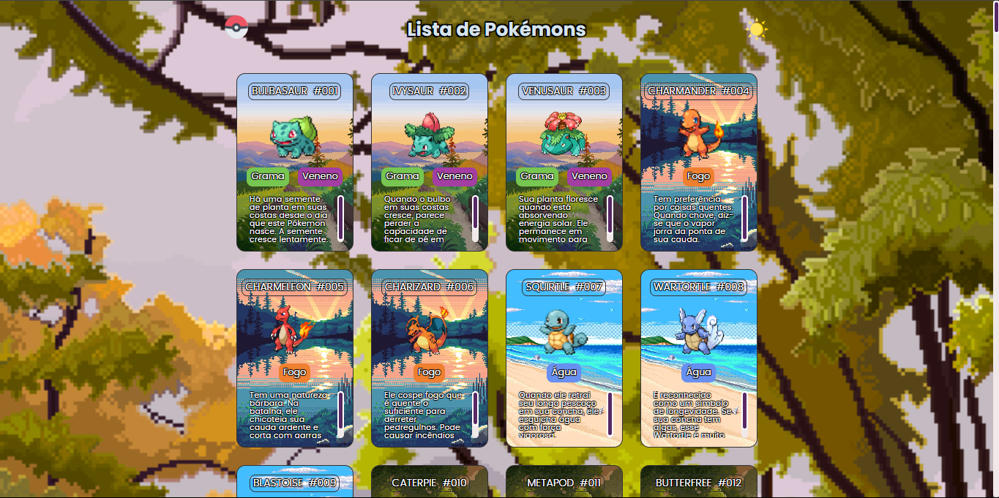
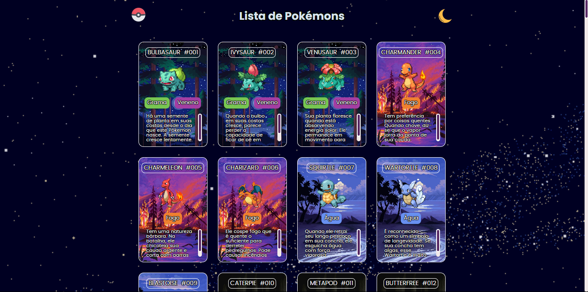
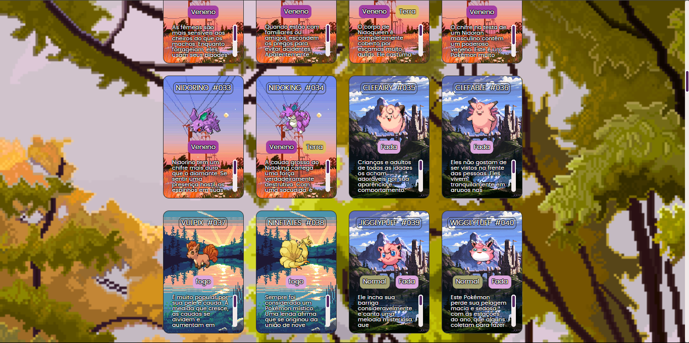
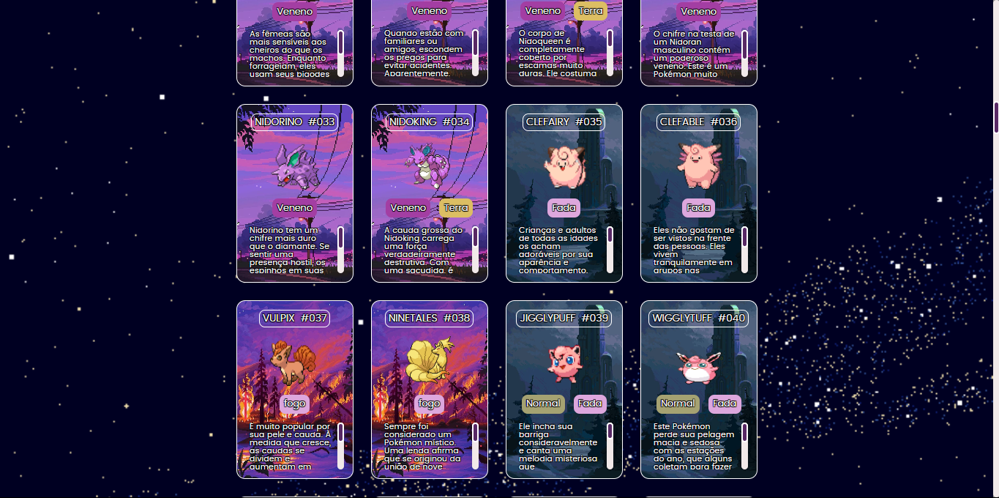

Uma Pokédex completa que permite visualizar pokémons por tipo, geração e número. Feita com HTML, CSS e JavaScript, ela busca dados da API e mostra informações de forma visualmente amigável. Ideal para fãs da franquia ou como projeto de aprendizado com consumo de APIs.




← Voltar ao Portfólio